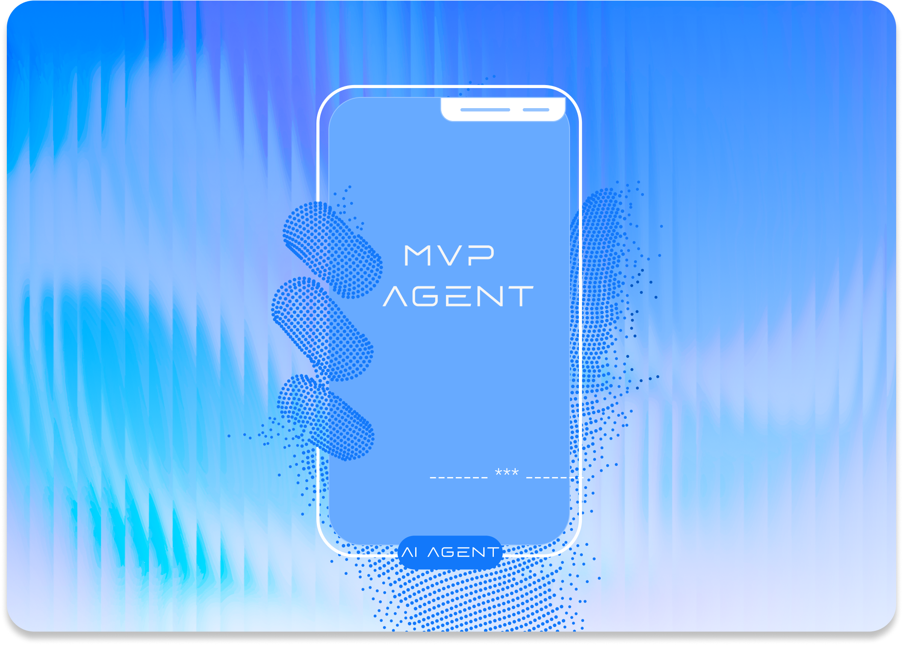

MVP Agent Development
We focus on building a functional MVP agent that solves one core business problem
Cyberk's MVP Agent Development service helps you quickly turn your idea of an "AI employee" into a real, working product.
Instead of building a complex multi-agent system, we start with a focused MVP agent that proves value fast — then scale from there.
CONTACT US →Is This Right for You?
AI automation innovators
Entrepreneurs and teams exploring how AI agents can automate workflows, reduce costs, and create competitive advantages.
Teams validating agents
Startup teams that want to validate whether an AI agent can solve a specific problem before committing to a full platform build.
Companies seeking data-driven AI
Businesses that want data-driven validation of AI capabilities — proving ROI before scaling investment in agent infrastructure.
Anyone leveraging AI
Anyone looking to leverage AI technology to create intelligent automation that works around the clock for their business.
Why Start with an MVP Agent?
Faster Time-to-Value ▾
Low Initial Cost ▾
Data-Driven Validation ▾
Solid Foundation ▾

Our Process
01
MVP Definition Workshop
We work with you to identify the single most impactful problem your AI agent should solve, define success metrics, and scope the MVP.
02
Rapid Development
Our team builds the agent using proven AI frameworks, integrating with your data sources and workflows in an agile sprint cycle.
03
Controlled Deployment
We deploy the agent in a controlled environment, monitor its performance, and fine-tune based on real interactions and feedback.
04
Review & Roadmap
We deliver a full performance report, review results together, and build a clear roadmap for scaling or expanding the agent's capabilities.
What You Get
Functional MVP AI Agent
A working AI agent deployed and solving your core business problem — ready for real-world testing and iteration.
Performance Report
Detailed analytics and insights on agent performance, accuracy, response times, and areas for improvement.
Development Roadmap
A clear, actionable plan for scaling your AI agent — feature priorities, architecture decisions, and timeline estimates.